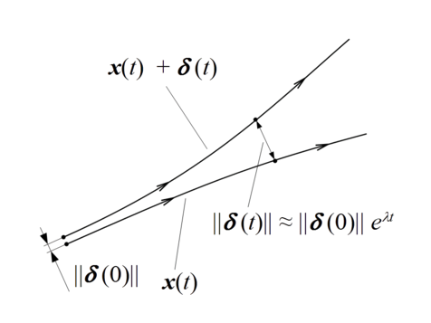

Don’t Try to Forecast Everything: Predictability of Time Series
Introduction
Most of time series analyses start with investigating series, autocorrelation and partial autocorrelation plots. Then one estimates different time series models (like ARIMA, GARCH, State-space models) and performs model checks.
But no one asks whether that series is predictable or not.
We’ll look at a few handy tools that give more information about our time series.
Data
We’ll use some example time series:
Monthly Airline Passenger Numbers 1949-1960 (AirPassengers) \(^{6}\)
Level of Lake Huron 1875-1972 (LakeHuron) \(^{6}\)
Simulated time-series data from the Logistic map with chaos \(^{1}\)
Tools
Let’s look the tools.
Lyapunov Exponent
Lyapunov exponent of a dynamical system is a quantity that characterizes the rate of separation of infinitesimally close trajectories. Quantitatively, two trajectories in phase space with initial separation vector \(\delta Z_0\) diverge at a rate given by
\[ |\delta Z(t)|\approx e^{\lambda t}|\delta Z_0| \]
where \(\lambda\) is the Lyapunov exponent. The rate of separation can be different for different orientations of initial separation vector. Thus, there is a spectrum of Lyapunov exponents. It is common to refer to the largest one as the maximal Lyapunov exponent (MLE), because it determines a notion of predictability for a dynamical system \(^{7}\).


I’ll not go into detail on how to calculate the maximal Lyapunov exponent, we’ll look at practical implications.
A positive MLE is usually taken as an indication that the system is chaotic \(^{7}\).
Hurst Exponent
The Hurst exponent is referred to as the “index of dependence” or “index of long-range dependence”. It quantifies the relative tendency of a time series either to regress strongly to the mean or to cluster in a direction:
Trending (Persistent) series: If \(0.5 < H \leq 1\) , then series has long-term positive autocorrelation, so a high value in the series will probably be followed by another high value and the future will also tend to be high;
Random walk series: if \(H = 0.5\), then series is a completely uncorrelated series, so it can go either way (up or down);
Mean-reverting (Anti-persistent) series: if \(0 \leq H < 0.5\), then series has mean-reversion, so a high value in the series will probably be followed by a low value and vice versa \(^{8}\).
Detrended Fluctuation Analysis
DFA is a method for determining the statistical self-affinity of a signal. It is the generalization of Hurst exponent, it means \(^{8}\):
for \(0<\alpha<0.5\), then the series is anti-correlated;
for \(\alpha=0.5\), then the series is uncorrelated and corresponds to white noise;
for \(0.5<\alpha<1\), then the series is correlated;
for \(\alpha\approx1\), then the series corresponds to pink noise;
for \(\alpha>1\), then the series is nonstationary and unbounded;
for \(\alpha\approx1.5\), then the series corresponds to Brownian noise.
Variance Ratio Test
This test is often used to test the hypothesis that a given time series is a collection of i.i.d. observations or that it follows a martingale difference sequence.
We will use Chow and Denning’s multiple variance ratio test. There are two tests:
- CD1 - Test for i.i.d. series,
- CD2 - Test for uncorrelated series with possible heteroskedasticity.
If test statistics are bigger than critical values, the null hypothesis is rejected which means the series is not a random walk.
Statistics of the series
AirPassengers data
Results:
Lyapunov exponent spectrum:
Call: Lyapunov exponent spectrum Coefficients: Estimate Std. Error z value Pr(>|z|) Exponent 1 -0.8398548 0.2333552 -28.33887 5.739062e-177 Exponent 2 -1.5136329 0.1937088 -61.52719 0.000000e+00 --- Procedure: QR decomposition by bootstrap blocking method Embedding dimension: 2, Time-delay: 1, No. hidden units: 10 Sample size: 129, Block length: 62, No. blocks: 1000There are two statistically significant exponent estimates. The largest one is -0.84 which is negative, which means the series is not chaotic.
Hurst exponent is 0.8206234; it is bigger than 0.5, so series is trending.
DFA is estimated as 1.2988566; it is nonstationary and unbounded.
Variance ratio test:
$Holding.Periods [1] 2 4 5 8 10 27 $CD1 [1] 24.48521 $CD2 [1] 21.22941 $Critical.Values_10_5_1_percent [1] 2.378000 2.631038 3.142756Both of test statistics are bigger than critical values, so the series is not a random walk.
LakeHuron data
Results:
Lyapunov exponent spectrum:
Call: Lyapunov exponent spectrum Coefficients: Estimate Std. Error z value Pr(>|z|) Exponent 1 -0.2245224 0.03079226 -56.00722 0 Exponent 2 -0.6465142 0.01144893 -433.74968 0 Exponent 3 -0.6696687 0.01006248 -511.18811 0 Exponent 4 -1.6931702 0.02747627 -473.33519 0 --- Procedure: QR decomposition by bootstrap blocking method Embedding dimension: 4, Time-delay: 1, No. hidden units: 2 Sample size: 94, Block length: 59, No. blocks: 1000There are four statistically significant exponent estimates. The largest one is -0.22 which is negative, which means the series is not chaotic.
Hurst exponent is 0.7364948; it is bigger than 0.5, so series is trending.
DFA is estimated as 1.1128455; it is nonstationary and unbounded.
Variance ratio test:
$Holding.Periods [1] 2 4 5 8 10 3 $CD1 [1] 11.45734 $CD2 [1] 9.407748 $Critical.Values_10_5_1_percent [1] 2.378000 2.631038 3.142756Both of test statistics are bigger than critical values, so the series is not a random walk.
Simulated time-series data from the Logistic map with chaos
Results:
Lyapunov exponent spectrum:
Call: Lyapunov exponent spectrum Coefficients: Estimate Std. Error z value Pr(>|z|) Exponent 1 -1.291195 0.1580609 -63.27662 0 --- Procedure: QR decomposition by bootstrap blocking method Embedding dimension: 1, Time-delay: 1, No. hidden units: 2 Sample size: 99, Block length: 60, No. blocks: 1000There is one statistically significant exponent estimate, -1.29 which is negative, which means the series is not chaotic which is a questionable result.
Hurst exponent is 0.6255664; it is bigger than 0.5, so series is trending.
DFA is estimated as 0.758476; it is correlated.
Variance ratio test:
$Holding.Periods [1] 2 4 5 8 10 10 $CD1 [1] 1.193817 $CD2 [1] 1.295116 $Critical.Values_10_5_1_percent [1] 2.378000 2.631038 3.142756Both of test statistics are smaller than critical values, so the series is a random walk.
Full source code: https://github.com/mrtkp9993/MyDsProjects/tree/main/TimeSeriesPredictability
References
\(^1\) DChaos, https://cran.r-project.org/web/packages/DChaos/index.html
\(^2\) statcomp, https://cran.r-project.org/web/packages/statcomp/index.html
\(^3\) pracma, https://cran.r-project.org/web/packages/pracma/index.html
\(^4\) tseriesChaos, https://cran.r-project.org/web/packages/tseriesChaos/index.html
\(^5\) Daniel F. McCaffrey , Stephen Ellner , A. Ronald Gallant & Douglas W. Nychka (1992) Estimating the Lyapunov Exponent of a Chaotic System with Nonparametric Regression, Journal of the American Statistical Association, 87:419, 682-695
\(^6\) boot, https://www.rdocumentation.org/packages/boot/versions/1.3-28/topics/boot.
\(^7\) Contributors to Wikimedia projects. “Lyapunov exponent - Wikipedia.” 7 July 2022, https://en.wikipedia.org/w/index.php?title=Lyapunov_exponent&oldid=1096875011.
\(^8\) Contributors to Wikimedia projects. “Hurst exponent - Wikipedia.” 12 June 2022, https://en.wikipedia.org/w/index.php?title=Hurst_exponent&oldid=1092814465.
\(^9\) DFA, https://cran.r-project.org/package=DFA
\(^{10}\) Contributors to Wikimedia projects. “Detrended fluctuation analysis - Wikipedia.” 19 June 2022, https://en.wikipedia.org/w/index.php?title=Detrended_fluctuation_analysis&oldid=1093832537.
\(^{11}\) nonlinearTseries, https://cran.r-project.org/web/packages/nonlinearTseries/index.html.